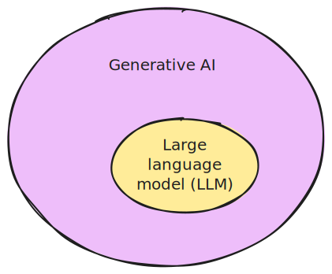
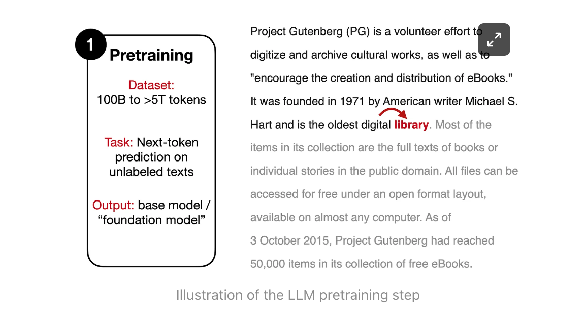
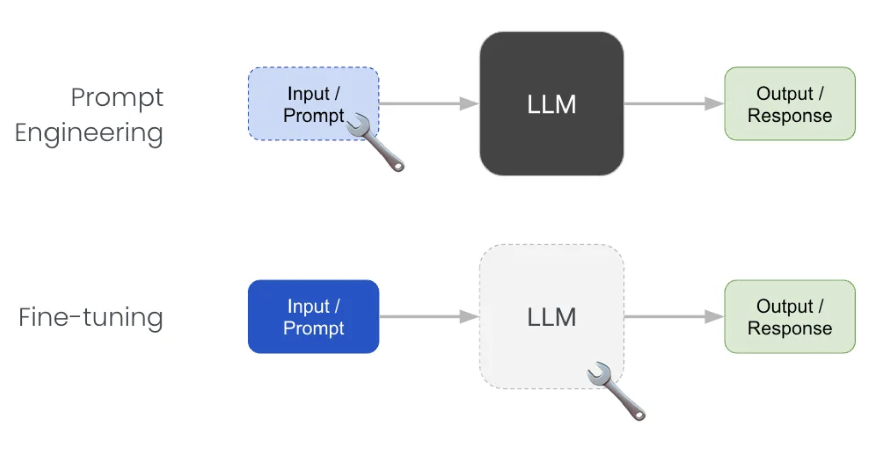
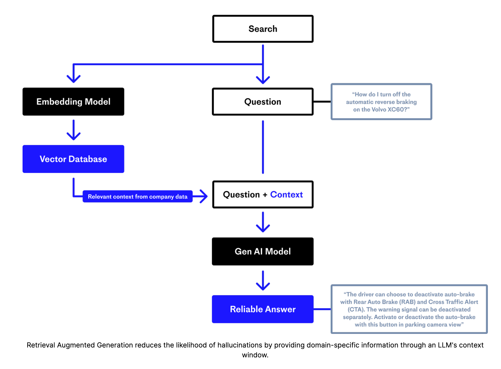

Prompt Labor: Basics
Assistant menagerie
| Assistant | Provider | Privacy | LLM | Capabilities | Pricing model |
|---|---|---|---|---|---|
| ChatGPT | OpenAI | üëéüèº | GPT-3.5, GPT-4 | Web search, DALLE, GPTs, multimodal input | üí∂ |
| Copilot | Microsoft | üëçüèº | GPT-3.5, GPT-4 | Web search, DALLE, multimodal input | üÜì for BFH employees and students |
| Gemini | üëéüèº | Gemini Ultra, Gemini Pro, and Gemini Nano | Web search, multimodal input | üí∂ | |
| HuggingChat | ü§ó Hugging Face | üëçüèº | Various open models, e.g. CodeLlama, Llama 2, Mistral, Gemma | üÜì |
Orientierungshilfe für Lehrpersonen der BFH
Haltung der BFH: Technologien, die den Lernprozess unterstützen und praxisrelevant sind, sollen in die Lehre einbezogen werden.
Einsatz von KI in der Lehre: Die Mehrheit der Studierenden wird KI-Tools nutzen. Studierende sollen lernen, Technologien kompetent einzusetzen und kritisch zu hinterfragen.
What is Artifical Intelligence?

A branch of computer science that aims to create machines that can perform tasks that typically require human intelligence.
What is a Large Language Model?

An LLM is a type of generative AI model that is trained to predict the next word following the input (prompt).
Training

How to train a language model

How to train a language model
- An LLM learns to predict the next word in a sequence, given the previous words: \[ P(word | context) \]
- Think of as “fancy autocomplete” (but very very powerful and sopisticated)

Text Generation
How does an LLM generate text?

Sampling

Auto-regressive generation
Text is generated one word at a time (actually tokens, not words).
- Model predicts which word is likely to follow, given a sequence of tokens (words, punctuation, emojis, etc.).
- A word is sampled from the predicted distribution.
- The new word is added to the sequence of words (context) that is used to predict the next word.
\[ P(w_{w+1} | w_1, w_2, ..., w_t) \]
Generated text is dependent on the context.
Every token is given an equal amount time (computation per token is constant).
Auto-regressive generation

Foundation models
A foundation model, or large language model (LLM):
- is a type of machine learning model that is trained to predict the next word following the input (prompt).
- is trained “simply” to predict the next word following a sequence of words.
- does not necessarily produce human-like conversations.
: What is the capital of France?
: What is the capital of Germany? What is the capital of Italy? . ..
Training data

Figure courtesy of Andrej Karpathy
Training process

Figure courtesy of Andrej Karpathy
Assistant models
Trained (fine-tuned) to have conversations: turn-taking, question answering, not being [rude/sexist/racist].

- Foundation model has learned to predict all kinds of text, including both desirable and undesirable text.
- Fine-tuning is a process narrow down the space of all possible output to only desirable, human-like dialogue.
Reinforcement learning from human feedback (RLHF)

Model is aligned with the values of the fine-tuner.
How do Chatbots work?

- Designed to present the illusion of a conversation between two entities.
How do chatbots actually work?


An assistant model is a role-play simulator

- An assistant is trained to respond to user prompts in a human-like way.
- Simulates possible human conversations.
- Has no intentions. It is not an entity with its own goals.
- Does not have a “personality” or “character” in the traditional sense. It can be thought of as a role-playing simulator.
- Has no concept of “truth” or “lying”. The model is not trying to deceive the user, it is simply trying to respond in a human-like way.
Hallucination

- LLMs can generate text that is not true, or not based on any real-world knowledge.
- This is known as “hallucination”. A better term would be “confabulation”.
Can an LLM tell the truth?
- How would you know if an LLM is able to give you factual information?
- How would you test this?
: What is the capital of Uzbekistan?
: Tashkent
It looks like the LLM knows the capital of Uzbekistan1.
Knowledge base
- A knowledge base is a collection of facts about the world.
- You can
ask(retrieve) andtell(store) facts.
- You can
- An LLM is not a knowledge base.
- LLMs generate text based on on how probable the next word is given the context, not based on stored facts.

What are LLMs good at?
- Fixing grammar, bad writing, etc.
- Rephrasing
- Analyze texts
- Write computer code
- Answer questions about a knowledge base
- Translate languages
- Creating structured output
- Factual output only with external documents or web search
Prompting

What is a prompt?
- Remember: the goal of an LLM is complete text.
- A prompt is a piece of text (instruction) that is given to a language model to complete.
PROMPT : Write a haiku about a workshop on large language models.
ASSISTANT : Whispers of circuits,
Knowledge blooms in bytes and bits,
Model learns and fits.
- The response is generated as continuation of the prompt.
More technical definition: The output is generated by auto-regressively sampling from the probability distribution over the vocabulary, conditioned on the prompt.
Unlocking knowledge

- LLMs learn to do things they were not explicitly trained to do.
- Often, these capabilities need to be “unlocked” by the right prompt.
- But what is the right prompt?
- The answer is very similar to what you would tell a human dialogue partner/assistant.
- You can increase the probability of getting the desired output by asking good questions or giving enough information.
Basics of prompting
OpenAI give a set of strategies for using their models effectively:
These include:
- writing clear instructions
- providing reference texts
- splitting tasks into subtasks
- giving the LLM ‘time to think’
- using external tools
Writing clear instructions
- Think of an LLM as a role-playing conversation simulator.
- Instructions should be clear and unambiguous.
- Indicate which role the model (persona) should adopt.
Adopt a persona (role)
: You are an expert on learning techniques. Explain the concept of ‘flipped classroom’ in one paragraph.
: You are an expert financial derivatives. Explain the concept of ‘flipped classroom’ in one paragraph.
Provide reference texts
- Provide a model with trusted and relevant information.
- Then instruct the model to use the provided information to compose its answer.
Instruct the model to answer using a reference text
This leads to retrieval-augmented generation (RAG). First create a database of documents, then retrieve the most relevant documents, based on a user’s query. These are then included in the prompt to the model. The model is instructed to use the information in the documents to compose its answer.
Giving GPT ‘time to think’
- LLMs generate text one word at a time–the model spends the same amount of computation on each word.
- Giving the model more context gives it more steps to “think”.
- This increases the chances that the model will give a good answer.
- This technique is known as chain-of-thought prompting, and can often be induced by simply instructing the model to
think step-by-steporTake a deep breath and work on this problem step-by-step(Yang et al. 2023).
Chain-of-thought prompting
- Chain-of-thought prompting encourages the LLM to “explain” its intermediate reasoning steps.
- Enables complex reasoning and problem solving.
Instead of this:
: The odd numbers in this group add up to an even number: 4, 8, 9, 15, 12, 2, 1. Yes or no?
Do this:
: Is this statement correct? The odd numbers in this group add up to an even number: 4, 8, 9, 15, 12, 2, 1.
Reason through the problem step-by-step. Start by identifying the odd numbers. Next, add them up. Finally, determine if the sum is even or odd. Write down your reasoning steps in a numbered list.
Why does this work?
Zero-shot chain-of-thought prompting
: The odd numbers in this group add up to an even number: 4, 8, 9, 15, 12, 2, 1. Take a deep breath and think step-by-step.
When using GPT-4, ChatGPT and Copilot do this automatically.
Use Markdown formatting
- Use Markdown to format your prompts.
- Instruct the LLM to format its output using Markdown.
: Improve this haiku:
Words weave through the air,
Minds meld with machine’s deep thought,
Knowledge blooms anew.
It is about about a workshop on large language models. I’m not happy with it.
Show me all the text. Format your edits as **TEXT** and show the deleted text as ~~TEXT~~. Keep you review short (max 100 words).
Try this example in ChatGPT.
Advanced prompting techniques
For more advanced prompting techniques, see these websites:
and explore this activity.
Advanced LLM techniques

Retrieval-augmented generation (RAG)

Figure courtesy of Pinecone
Web search
- Similar to retrieval-augmented generation, but with web search.
- LLMs can be instructed to use web search to find information.
- Copilot does this automatically - ChatGPT (paid version only) can be instructed to do this.
External tools
- LLMs can be instructed to use external tools to complete tasks.
- For example, an LLM can be instructed to use a calculator to perform arithmetic.
- OpenAI calls this approach function calling.
Multi-agent conversations

Local models
Hardware requirements:
- Apple Silicon Mac (M1/M2/M3) / Windows / Linux
- 16GB+ of RAM is recommended
- NVIDIA/AMD GPUs supported
References
Footnotes
What it is actually doing is responding with the most likely sequence following the question.↩︎